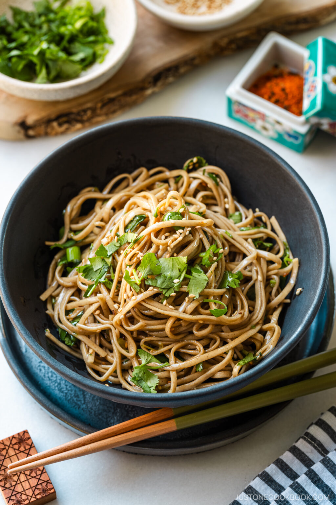

Soba Noodle Salad

Description
A tasty Japanese soba noodle salad. Perfect for nice summer's day. With only a few simple ingredients, this dish will be a crowd-pleaser for sure!
Ingredients
- Soba noodles
- Green onions
- Coriander
- Roasted sesame seeds
- Dressing:
- Neutral Oil
- Roasted Sesame Oil
- Crushed chili flakes
- Honey
- Soy Sauce
Steps
- Make the salad dressing:
Heat the neutral oil, sesame oil, and red chili pepper flakes in a saucepan and cook until fragrant. Remove from the heat and add the honey and soy sauce. Set aside to cool.
- Boil the soba noodles:
Cook according to the package instructions. Drain and rinse off the starch under cold running water. Drain well and set aside.
- Assemble:
Combine the chilled noodles, the cooled dressing, freshly chopped green onions and coriander, and sesame seeds in a large bowl. Toss everything together and serve immediately.